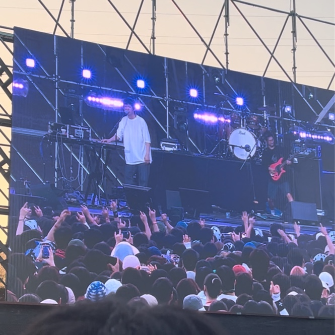

작년에 갔던 공연들
-

-

- 
안녕하세요, 데이지에요. 우아한테크코스에서 공부중입니다. 샤브샤브를 좋아하고 공연 보러가는 것을 좋아합니다.

처음에는 포스터부터 너무 지루해 보여서 볼 생각이 없었는데 언니의 추천으로 어쩌다 시작하게 됐다. 간단한 줄거리는 연인 왕취안성의 죽음으로 힘들어하던 황위쉬안이 어느날 카세트 플레이어가 든 익명의 택배를 받는다. 이 카세트 플레이어를 들으며 잠에 들었다 깨어보니 과거로 타임슬립을 했다. 그리고 그곳에는 자신과 얼굴은 같지만 이름이 다른 여고생이 되어 왕취안성과 똑같이 생긴 리쯔웨이를 만난다. 왕취안성과 리쯔웨이의 관계를 알기위해 현실과 과거를 오가는 내용이다. 이렇게만 보면 평범한 타임리프물이라 생각하겠지만 정말 둘의 지독한 사랑을 볼 수 있다. 제목인 상견니(想見你)의 뜻이 "널 보고 싶어"인 것만 봐도 얼마나 절절할지 감이 올 것이다.반전이 많아서 스포를 최소화 해서 보는 것이 제일 재밌기 때문에 보게 된다면 아무 정보도 찾지말고 바로 보는 것을 추천한다. 개인적으로 영화나 책을 볼때 작품 속의 배경과 현재 배경을 동일하게 만들고 보는 것을 좋아해서 이 작품도 장마철에 봤다. 만약 보게 된다면 한여름의 장마철에 보는 것을 추천한다.

내 닉네임의 유래가 된 노래를 만든 wave to earth의 "사랑으로" 라는 노래다. 이 노래는 처음 간주부터 너무 좋았다. 개인적으로 노래를 들을때 가사보다 무조건 멜로디를 듣는편이라 가사에 대해 별 생각이 없었다. 그러다 앨범 제작 다큐를 보면서 곡을 만든 김다니엘이 사랑으로의 가사는 멤버들을 생각하면서 쓴 가사라고 해서 다시 들어보니 가사가 다르게 들렸다. "부서지고 굳어지고 녹아내리고나면 그제서야 보이는 나의 영원"이라는 가사를 멤버들을 생각하며 적었다는 게 것이 참 낭만적인 것 같다. 이렇게 의미있는 곡이라 라이브를 할때 격정적으로 무대를 하는 게 많다. 잔잔한 음원과 달리 마지막 부분에서 드럼을 거의 뚜드려 패듯이 폭발적으로 연주하는 것이 진짜 최고다. 라이브 버전에서 때때로 마지막 부분을 올려서 부르는데 이제 그렇게 안부르면 섭섭할 지경이다. 이곡을 라이브로 듣기 위해서라도 꼭 콘서트에 가고싶다.